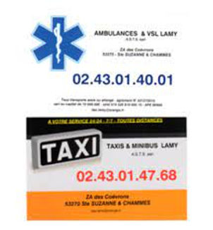
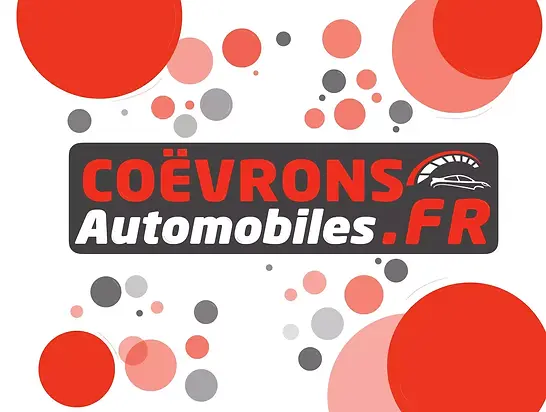
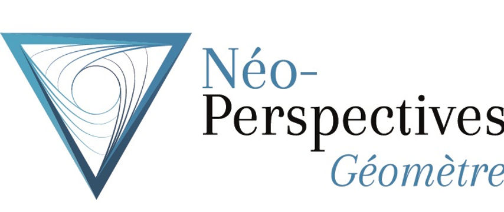
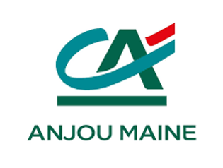
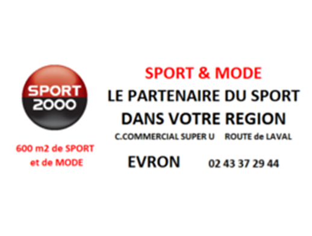
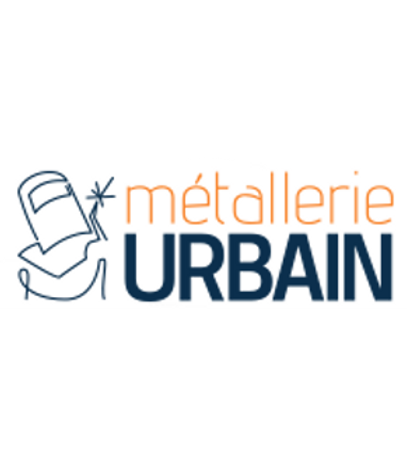
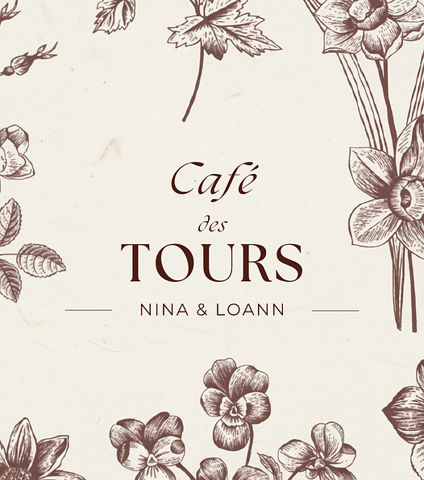
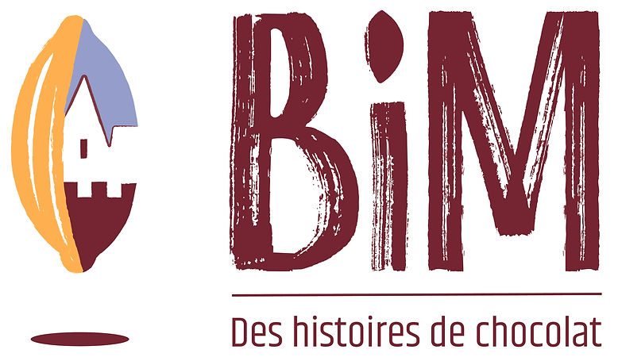
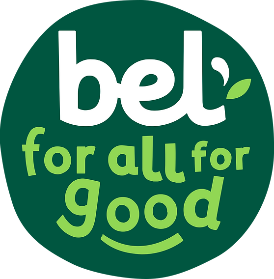

Ambulances Taxis Lamy
Service ambulancier et taxis à Sainte-Suzanne.
Entreprises locales, institutions, associations et commerces accompagnent l’organisation et l’accueil des coureurs.
Une page sobre pour valoriser chaque soutien et garder une lecture simple des partenaires de la course.

Service ambulancier et taxis à Sainte-Suzanne.

Mécanique, carrosserie et véhicules d’occasion à Évron.

Géomètre et topographe, plans précis pour projets réussis.

La banque coopérative ancrée dans le territoire.

L’association organisatrice des 6 heures de Sainte-Suzanne.

Sport et mode, partenaire du sport dans la région.

Métallerie, serrurerie, menuiserie et stores.

Bar, restaurant et chambres d’hôtes au cœur de Sainte-Suzanne.

Le label patrimonial qui raconte le décor de la course.

Chocolats bio et équitables en plein cœur de la cité.

Entreprise familiale et marques fromagères iconiques.

L’animation bia-trail au cœur de l’après-midi.